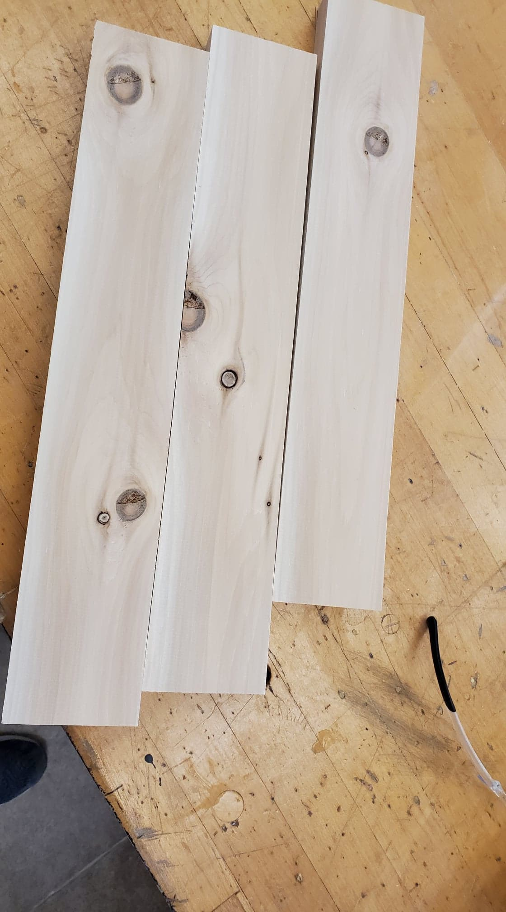

It was time use the skills I have learned in the four weeks to create this unique planter box.
Research
Since I am creating the planter box without a premade design, I had to create my own. I first looked at other designs on google. I noticed that many of them have trim and the pieces that make the sides are the same length so I used these ideas in my project. Here is one of those pictures
Sketch
Now I drew my rough design without any measurements
Sketchup
After having a rough design of my box I moved onto sketchup. In sketchup I created my design, the joineries, and width and height of pieces. sketchUp is a 3D modeling computer program for a wide range of drawing applications such as architectural, interior design, and landscape architecture, but can also be used for many more applications. This is how my design looks on SketchUp. The same coloured pieces are the exactly the same.
Design
Cutlist
Now that I had my design and measurements down I had to make sure I had enough wood for it. The maximum was 6-7 board feet. So I created a cutlist on google sheet with all the measurement and then caculated how much wood it would take. I will have used 5.6 board feet.
Cutting Wood Part 1
All the technical work and planning has been done now it is time to start cutting and creating. Firstly I needed to get my wood. I started with the wall pieces so I went and took three long planks of wood. I took one and went to the table saw. I made the distance from the wall to the blade 4.5 inches, turned on the machine, and keeping my fingers out of the way slid the wood through making it 4.5 inches wide. I then did the same thing with the other two setting them to 3 13/16" and 4 13/16". After setting the proper width for all the pieces it was time to make the length. I went to the mitre saw with my three planks. I set the length between the wall and blade to ten inches and put the first piece of wood up. I pressed hard with my left pushing it against the wall making sure the piece of wood won't move. I pressed the safety and the on button to turn on the button with my right hand and pulled down on the saw until it cut the wood. Then I waited for the blade to stop before picking it up again. I made four pieces of wood from the first plank and did the same to all the others.
Rabbet Joints part 1
The first joint that I have made was the rabbet joints. I made it on the 4 1/2" and 4 13/16" pieces. To create the rabbet joint I went to the table saw with the dado blade. I set the width and height to 1/2", turned on the machine, pushed with my left hand on the pieces of wood while moving the wall the piece of wood was stacked on with my right until the blade had cut a full 1/2" by 1/2" by 10" hole in the bottom. I did it for all 8 pieces.
Tongue And Groove Joints
I used the tongue and groove joinery to connect all the side pieces other than the corners. For the groove I went to the table saw. I set the height of the blade to be 1/2" and the distance from the wall to be 1/4". I turned on the machine, stacked my wood against the wall and keeping my fingers out of the way pushed the wood through until the blade cut through the wood. I then turned off the machine, turned my wood around so it will make a cut a quarter inch away from the other side and did the same as before. I did the same to all other seven pieces of wood. After making two cuts the groove is mostly complete except a small line of wood in the middle of the joint which the blade has not cut off. To cut off that line I adjusted the blade to be right under the line and cut the same as before. I then did the same to all the other pieces. To make the tongue I went to the table saw with the dado blade, made the width and height of the blade to 1/4", turned on the machine, and pushed my wood through. I then flipped the piece of wood and did the same to the other side. I also did it to all the other seven pieces.
Rabbet Joints part 2
To connect the walls and floor I will also use rabbet joints. While I haven't cut my floor yet I know the size, length, and joinery I will use to connect them. To make the rabbet joints here I did the exact same thing as before. I set the width and height to 1/2", turned on the machine, pushed with my left hand on the pieces of wood while moving the wall the piece of wood was stacked on with my right until the blade had cut a full rectange at the bottom. I did it for all twelve pieces.
Gluing walls
Now that I have finished all my joineries for my walls it is time to glue them together. I have first glued each full wall individually and then glued the corners. I first glued the two pieces for the smaller side which connect with a tongue and groove joint. I took the two pieces and put glue both on the tongue and in the groove joint as well as around it. I spread the glue out evenly on the wood with a piece of scrap wood, put the two pieces together in the joinery and made sure they are the same height. Then I put the two glued pieces between two small clamps on a flat surface and left them for 10 minutes. After finishing with one side I did the same thing to the other two pieces. After finishing the shorter walls I have moved onto the longer four piece walls. I did the same for them except that I used bigger clamps.
Cutting Wood part 2
I have now cut my floor. I did the exact same thing as I did with the walls except with different measurements. I went to the table saw and made a plank 2 15/16" wide, then I went to the mitre saw a cut three pieces width a length of 16 3/4".

Rabbet Joints part 3
Now that I have cut up my floor I had made the joinery to connect it with the walls. I have already made the rabbet joints on the walls so I just had to make them on the floor. I set the blade's height and width to 1/2". For all the bottom pieces, I have made a rabbet joint on the two shorter sides of the piece of wood. For two of the three bottom pieces I have also made a rabbet joint on one of their longer sides.
Gluing floors
To glue the floors I did the same as with the walls. For the floors I didn't make any joineries since it isn't really necessary so I used a butt joint which is just butting up to pieces together. I took the pieces and with the chisel made small X's on the sides that I will glue so the glue would stick better to the wood. I then sprayed glue on the wood and evened it out with a small stick. Then I put the woods in the clamps and left it for ten minutes
Last Step (Nailing)
Due to covid I had a lot less time to work on my projects so this one was a bit rushed. I was hoping to glue the corners and the floor to the walls together and just use nails as an extra safety feature but since having to rush the project I just nailed everything together instead of gluing. I went to the nail gun, held the pieces I want to connect with one hand and with the other hand I held the nail gun. Making sure I am not shooting the nails towards my finger, I pressed on the handle and it released a nail. I nailed multiple times for every two pieces that needed to be connected, until everything was together into one big planter box. Since I was rushed I did not have time to make my trim.